#Using the IMDB Top 1000 dataset listed in Canvas
library(readr)
df <- read_csv('imdb_top_1000.csv')Assignment 7 - Visualization - Some aspects of ggplot2
How to do it?:
Open the Rmarkdown file of this assignment (link) in Rstudio.
Right under each question, insert a code chunk (you can use the hotkey
Ctrl + Alt + Ito add a code chunk) and code the solution for the question.Knitthe rmarkdown file (hotkey:Ctrl + Alt + K) to export an html.Publish the html file to your Githiub Page.
Submission: Submit the link on Github of the assignment to Canvas
Use the data of your own. Produce the following types of plots and comment on each plot. Plots should be meaningful. If you use the data we used in class, make sure the plots are not the same as the ones in the slides. All plots should have title, caption, appropriate labels on x and y-axis.
library(tidyverse)Make a plot using
facet_wrapby one categorical variable (facet_wrap(~variable1))df %>% ggplot()+ geom_bar(mapping=aes(x=Certificate))+ facet_wrap(~Certificate)+ labs(title = 'Facet Wrapped Certificate Graphs', caption = 'Plot 1')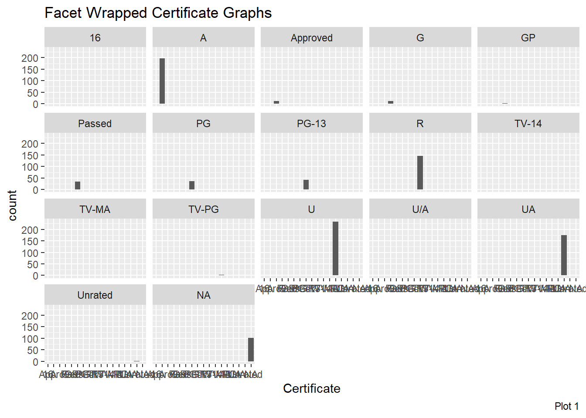
##This shows the facet-wrapped graphed for Certificate (age rating). ##some graphs have a higher line, indicating more values.Make a plot using
facet_wrapby two categorical variables (facet_wrap(~variable1+variable2))df %>% filter(Certificate=='PG') %>% ggplot()+ geom_bar(mapping=aes(x=Certificate, fill=Genre), position = 'fill') +facet_wrap(~Certificate+Genre)+ labs(title = 'Facet Wrap 2 Categoricals', caption = 'Plot 2')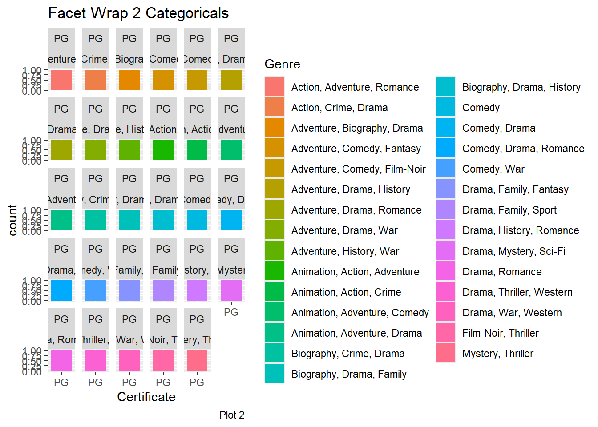
##This is the result of facet wrapping Certificate filtered to PG ##and Genre. The filter was needed because of the amount of ##variables that make the output too large.Make a plot using
position ='dodge'.df %>% ggplot()+ geom_bar(mapping=aes(x=Runtime, fill=Certificate), position = 'dodge')+ labs(title = 'Position Dodge', caption = 'Plot 3')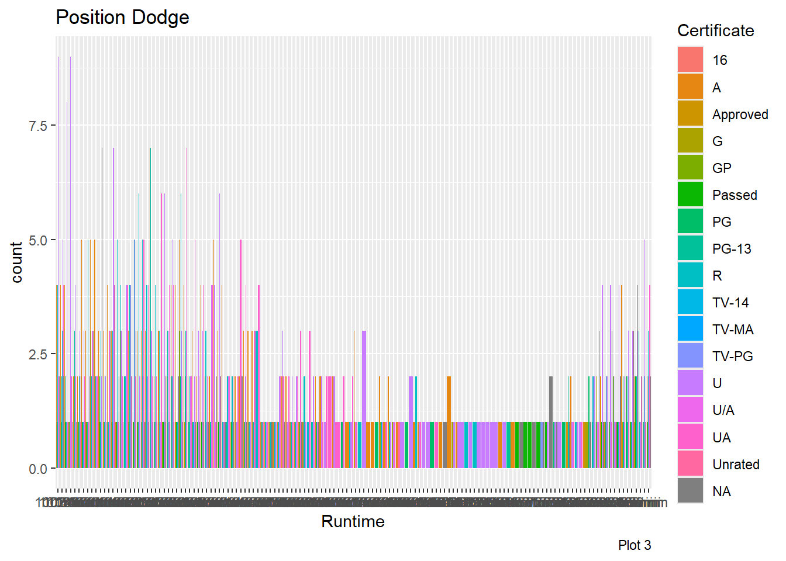
##This plot uses the dodge format. Each line is the same color ##unlike in the fill format.Make a plot using
position ='fill'.df %>% ggplot()+ geom_bar(mapping=aes(x=Runtime, fill=Certificate), position = 'fill')+ labs(title = 'Position Fill', caption = 'Plot 4')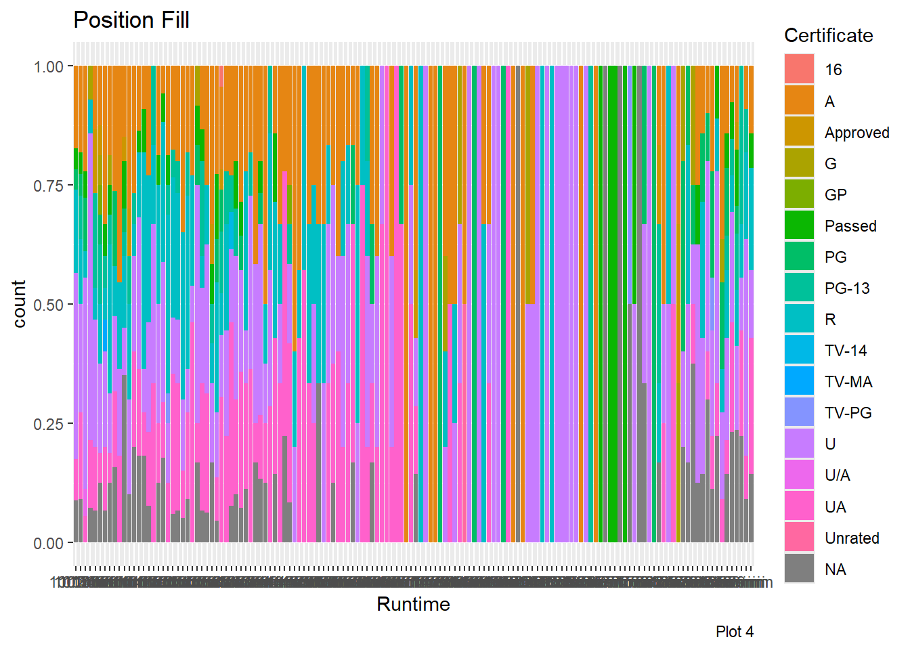
##This is the fill format, where lines can be multiple colors.Make a plot using
geom_col.df %>% ggplot()+ geom_col(mapping=aes(x=Certificate, y=Gross))+ labs(title = 'Geom_Col', caption = 'Plot 5')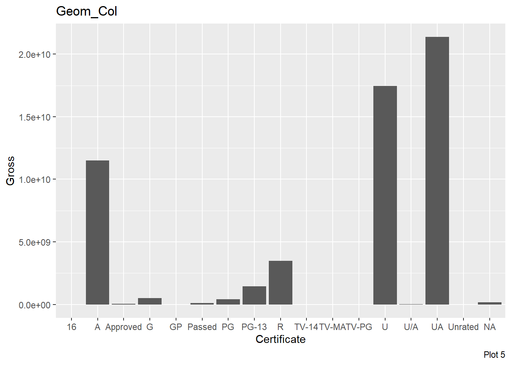
##Geom_col shows one variable's values against another variable's ##values in the vertical direction.Change the theme of one of your plots.
df %>% ggplot()+ geom_bar(mapping=aes(x=Certificate))+ facet_wrap(~Certificate)+ theme_dark()+ labs(title = 'Dark Theme', caption = 'Plot 6')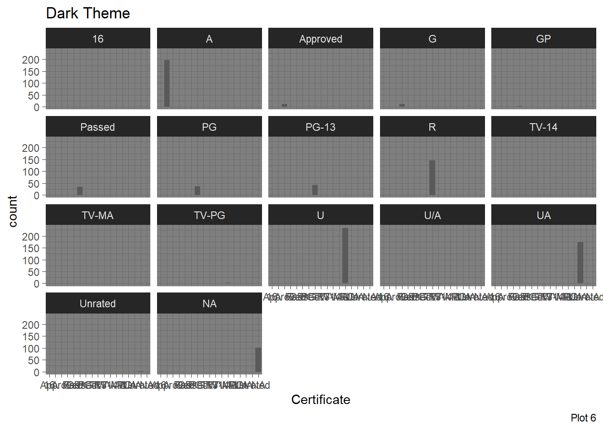
##This set of graphs is in dark theme.Make a plot using combo filter + ggplot
df %>% filter(Runtime>=105, Runtime<=110) %>% ggplot()+ geom_bar(mapping=aes(x=Certificate=='16', fill=Genre))+ labs(title = 'Combo Filter', caption = 'Plot 7')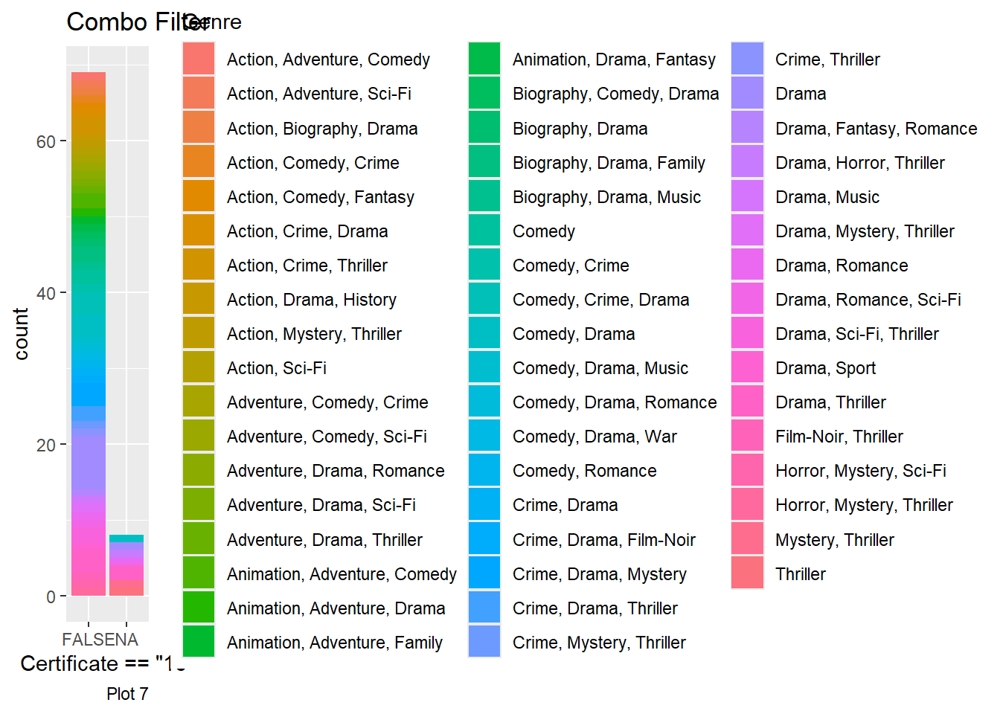
##This allows for a combo of variables in the plot.Make a plot using combo group_by + summarise + geom_col
df %>% group_by(Certificate, Genre) %>% summarise(mean_Runtime = Runtime) %>% ggplot()+ geom_col(aes(x=Genre, y=mean_Runtime, fill=Certificate), position = 'dodge')+ labs(title = 'Group By + Summarize + Geom_Col', caption = 'Plot 8')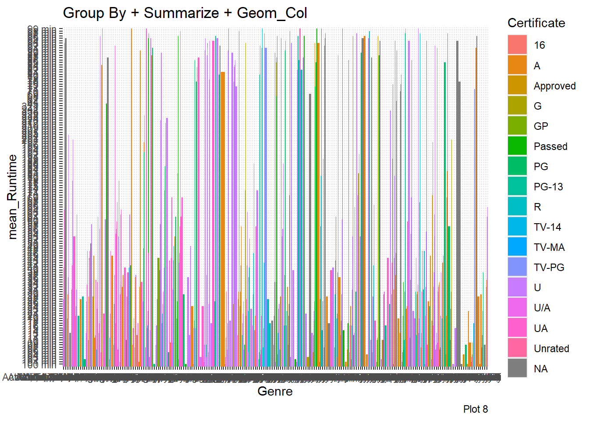
##These three functions allow for a complex output. The geom_col ##outputs vertical columns. Group by indicates the variables will ##be separated. Summarize considers some key values like the mean ##in this case.Save a plot and put a link of the plot to your Github Webpage. To link a plot
abc.pngyou just need to insert the following on the README.mdgg <- df %>% ggplot()+ geom_bar(mapping=aes(x=Runtime, fill=Certificate), position = 'dodge') ggsave(filename = 'abc.png', plot = gg)+ labs(title = 'abc.png', caption = 'Plot 9')NULL##This plot should appear as an image on my Github page.
[Link to the plot](abc.png)- In this question, we will use the Covid19 vaccination data for the US. The data and data dictionary can be found at the below link:
library(tidyverse)
df3 <- read_csv('https://bryantstats.github.io/math421/data/vaccinations-by-manufacturer.csv')Geom_point makes scatter plots, which plot two numeric (or Date) variables. A third categorical variable is often brought in for color. For example, we can compare different vaccine types used in the US by
df3 %>%
filter(location=='United States') %>%
ggplot()+
geom_point(mapping = aes(x = date,
y = total_vaccinations,
color = vaccine))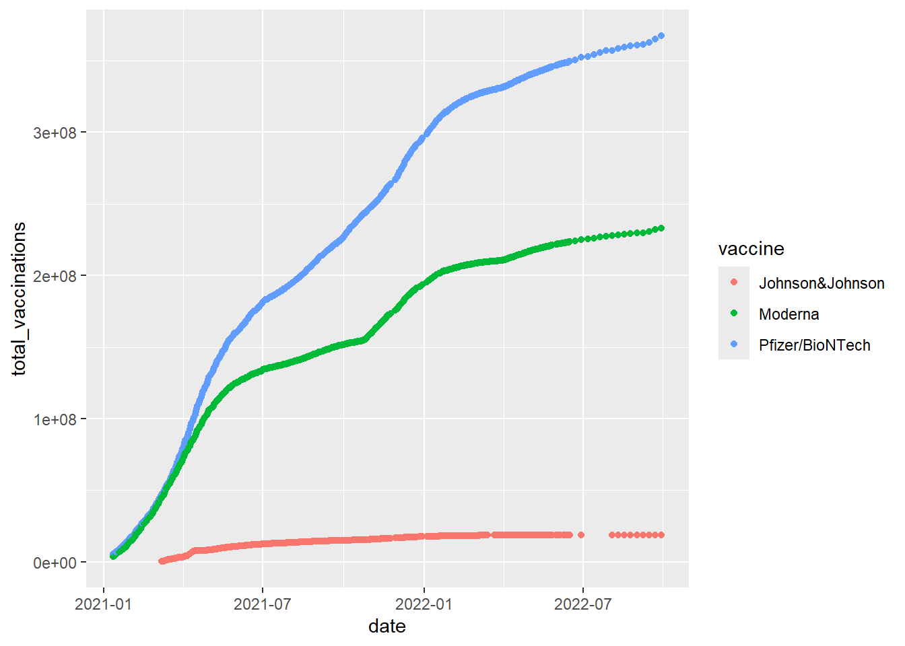
Do the follows.
Use
geom_pointto compare the vaccines used by date in Argentina in 2022.#These first 2 lines of code were suggested by Chat GPT since I #couldn't find a date filter code in the slides. df3_filtered <- df3 %>% filter(between(date, as.Date("2022-01-01"), as.Date("2022-12-31"))) df3_filtered %>% filter(location=='Argentina') %>% ggplot()+ geom_point(mapping = aes(x = date, y = total_vaccinations, color = vaccine))+ labs(title = 'Argentina 2022', caption = 'Plot 10a')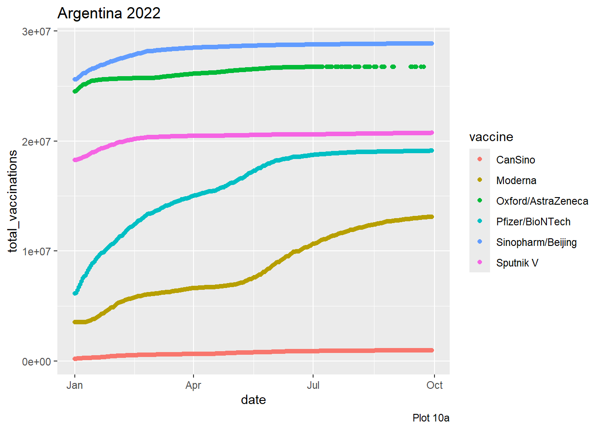
##This plot shows different vaccines used in Argentina in 2022. ##A different color indicates a different brand.Change
geom_pointtogeom_linein the above codes to have the corresponding line plots.#This is for the 1st plot. df3 %>% filter(location=='United States') %>% ggplot()+ geom_line(mapping = aes(x = date, y = total_vaccinations, color = vaccine))+ labs(title = 'Geom_Line', caption = 'Plot 10b')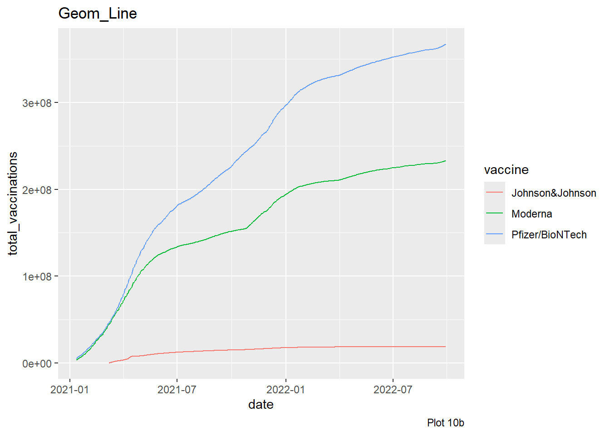
##Geom_line shows a connecting line instead of the points, which can ##make the trend clearer.#This is for the 2nd plot. df3_filtered %>% filter(location=='Argentina') %>% ggplot()+ geom_line(mapping = aes(x = date, y = total_vaccinations, color = vaccine))+ labs(title = '2nd Plot Argentina', caption = 'Plot 10c')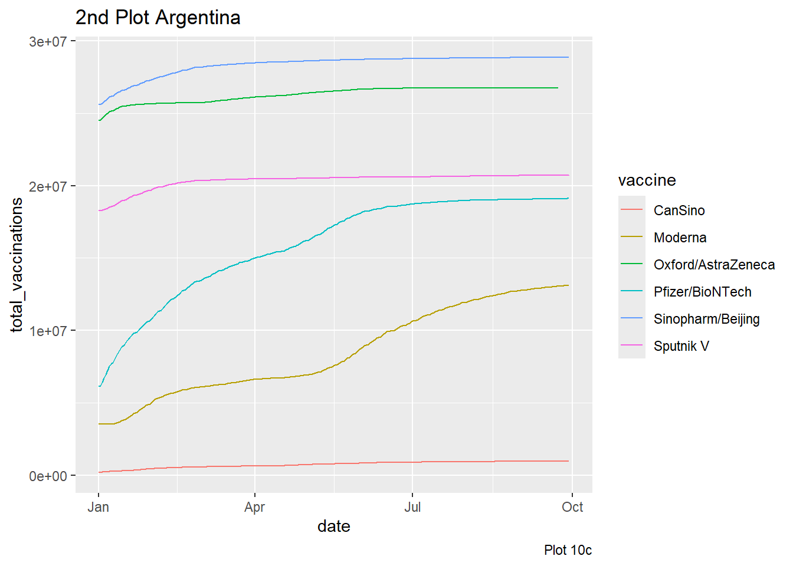
##This graph also uses geom_line, which makes the trend clearer.
- (Using the same dataset as in 10.) Sometime we need to do some calculations on the data before plotting. For example, the below codes is to compare the total vaccines (including all types of vaccines) by date between the US and the EU
# the total vaccines (including all types of vaccines) by date
d1 <- df3 %>%
filter(location %in% c('United States', 'European Union')) %>%
group_by(date, location) %>%
summarise(total_vac2=sum(total_vaccinations, na.rm=TRUE))
# Plot
d1 %>%
ggplot()+
geom_point(mapping=aes(x=date,
y=total_vac2,
color=location))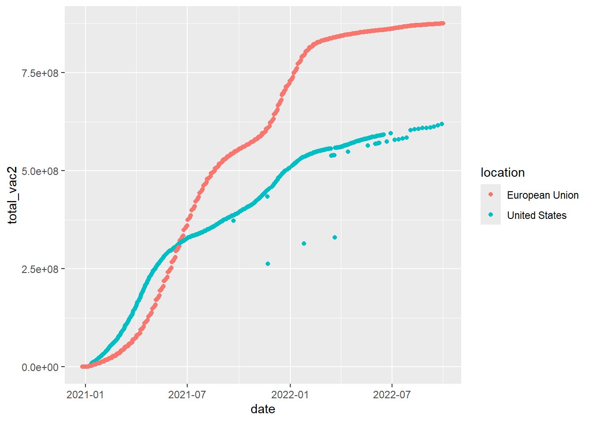
Notice that the above codes could be piped in one
df3 %>%
filter(location %in% c('United States', 'European Union')) %>%
group_by(date, location) %>%
summarise(total_vac2=sum(total_vaccinations, na.rm=TRUE)) %>%
ggplot()+
geom_point(mapping=aes(x=date,
y=total_vac2,
color=location))Do the follows.
Use
geom_pointcompare the total vaccines (including all types of vaccines) by date between countries/regions in Asiadf3 %>% filter(location %in% c('Japan', 'South Korea')) %>% group_by(date, location) %>% summarise(total_vac2=sum(total_vaccinations, na.rm=TRUE)) %>% ggplot()+ geom_point(mapping=aes(x=date, y=total_vac2, color=location))+ labs(title = 'Asia', caption = 'Plot 11a')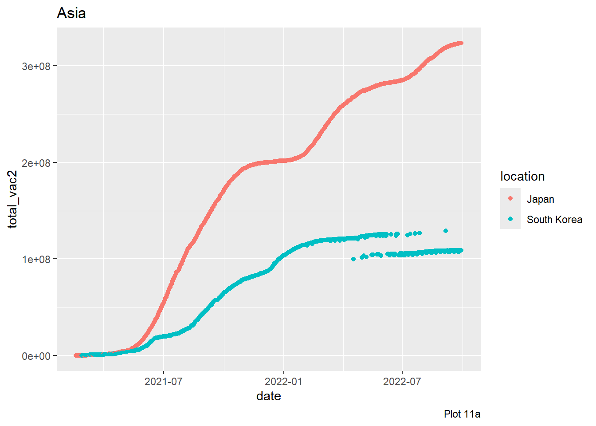
##Japan and South Korea had different vaccine usage. Japan's is ##shown to be higher.Use
geom_pointcompare the total vaccines (including all types of vaccines) by date between countries/regions in South America in 2021df3_filtered2 <- df3 %>% filter(between(date, as.Date("2021-01-01"), as.Date("2021-12-31"))) df3_filtered2 %>% filter(location %in% c('Uruguay', 'Chile')) %>% group_by(date, location) %>% summarise(total_vac2=sum(total_vaccinations, na.rm=TRUE)) %>% ggplot()+ geom_point(mapping=aes(x=date, y=total_vac2, color=location))+ labs(title = 'South America', caption = 'Plot 11b')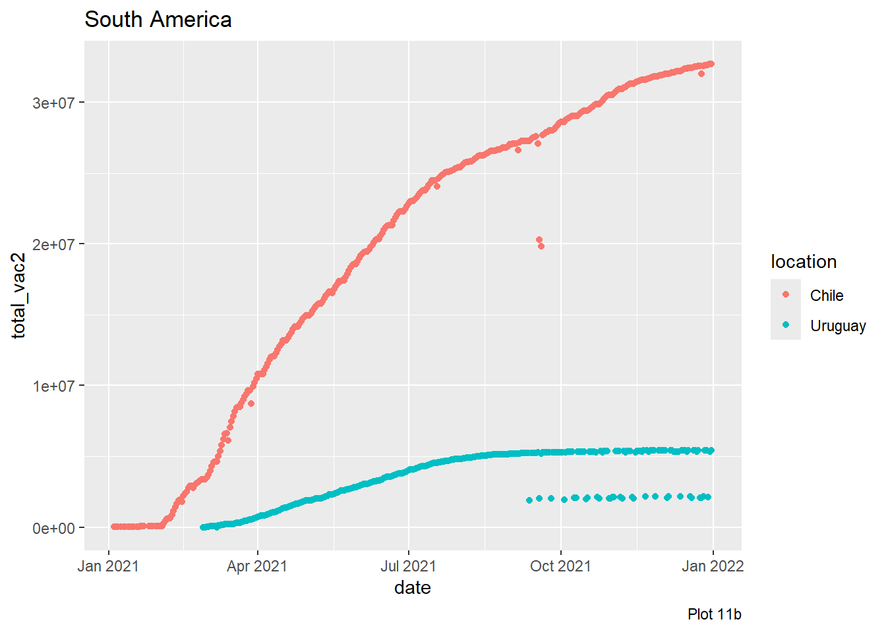
##Chile appears to have a higher amount of vaccinations than Uruguay ##in 2021.